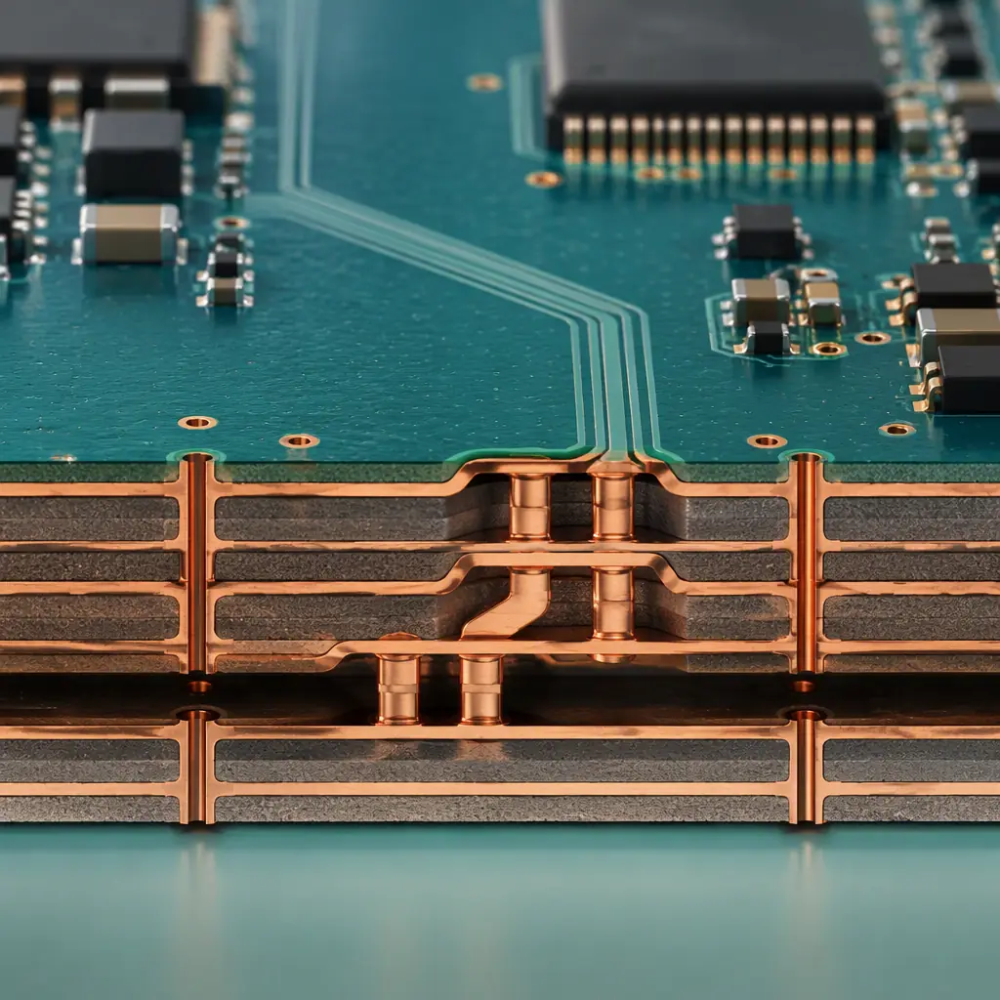
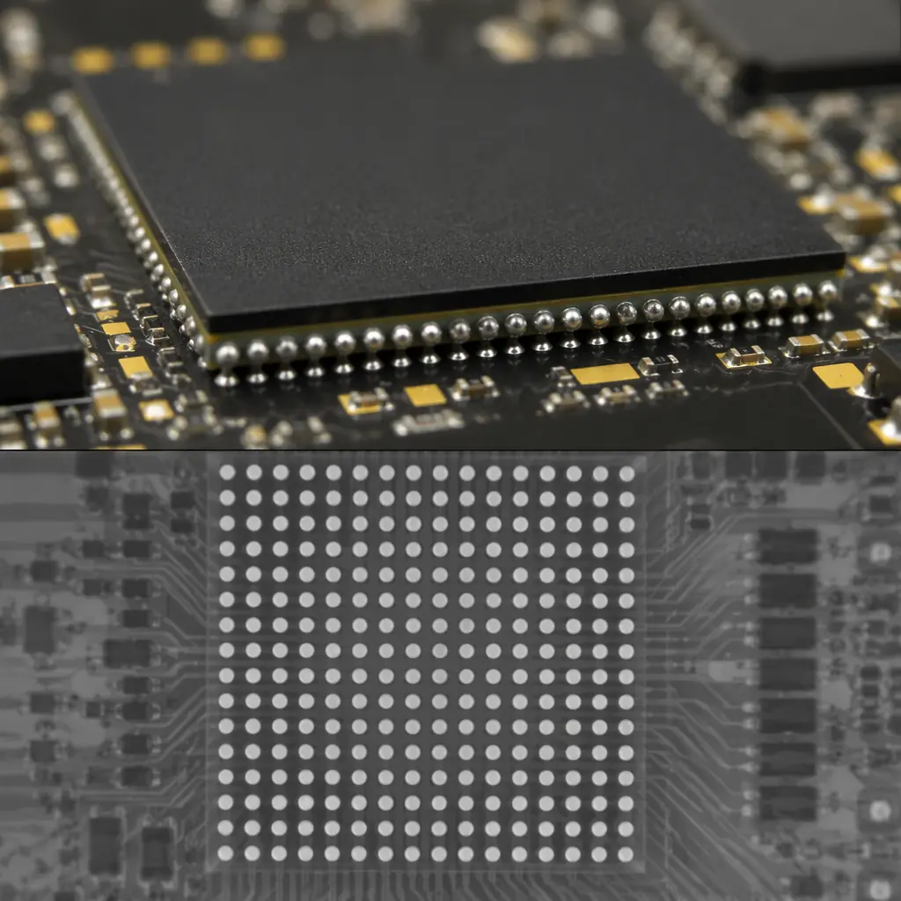

The SSD market shipped over 350 million units in 2025, and the transition from PCIe Gen4 to Gen5 doubled per-lane bandwidth to 32 GT/s. For PCB designers and procurement teams sourcing storage controller boards, this isn't an incremental change — it's a step function in signal integrity requirements. At 16 GHz Nyquist frequency, every via stub, every impedance discontinuity, and every millimeter of trace length becomes a measurable insertion loss contributor.
Huaxing PCBA manufactures storage controller PCBs up to 32 layers with low-loss laminates across 8 SMT lines. Our controlled-impedance process holds ±7% tolerance on differential pairs — tighter than the ±10% most fabricators quote — and we validate every controlled-impedance order with TDR measurements before shipment. This guide covers the PCB design rules that separate a storage board that passes PCIe compliance on the first spin from one that spends months in the lab chasing eye-diagram failures.
Why SSD PCBs Demand Different Design Rules
A consumer SSD PCB and a standard digital board might look similar at a glance, but the electrical requirements are worlds apart. PCIe Gen5 specifies a channel insertion loss budget of -36 dB at 16 GHz for the entire end-to-end link. At the PCB level, this translates to a loss budget of roughly -0.5 dB/inch at 16 GHz for the longest traces — and that's before accounting for connector loss, package parasitics, and manufacturing variation.
What makes storage PCBs uniquely challenging is the combination of three factors that rarely appear together on other board types:
Extreme Signal Density in a Constrained Form Factor
An M.2 2280 SSD packs 4 PCIe lanes onto a PCB measuring just 22 × 80 mm. That's differential pairs running at 32 GT/s with less than 3 mm of separation — far tighter than typical server or desktop motherboard layouts. Crosstalk coupling between adjacent pairs must stay below -35 dB at 16 GHz, which forces careful layer assignment and ground-isolation strategies. See our signal integrity design rules for the complete crosstalk prevention framework.
Mixed-Signal Coexistence on a Single Board
Storage PCBs carry PCIe signals at multi-gigahertz frequencies alongside NAND flash I/O running at 1.6–2.4 GT/s per pin, multiple voltage regulator modules switching at 500 kHz–2 MHz, and DDR4/5 DRAM interfaces. The noise from the power delivery network couples into sensitive PCIe receivers unless power planes and signal layers are rigorously separated in the stackup.
Thermal Gradients Across the Board
The SSD controller ASIC dissipates 5–12 W concentrated in a 15 × 15 mm BGA package, creating a hot spot while NAND packages run cooler. This thermal gradient introduces differential expansion across the PCB, which can warp impedance-controlled traces and degrade signal integrity over thermal cycles. Our thermal management strategies guide covers material selection and via placement for high-power-density boards.
Key Takeaway: PCIe Gen5 at 32 GT/s requires insertion loss below 0.5 dB at 16 GHz for the longest traces. This is not achievable with standard FR-4 — you need low-loss laminates, tight impedance control (±7–10%), and backdrilled vias. A board that "looks right" in layout can still fail compliance if the fabricator doesn't validate impedance with TDR at the Nyquist frequency.
High-Layer-Count Stackups for Storage Controllers
Enterprise SSD controllers — Samsung PM1743, Kioxia CM7, Micron 9400 series — all use PCBs with 12 to 22 layers. Consumer M.2 drives typically use 8 to 12 layers. The layer count isn't about routing density alone — it's about providing enough ground and power plane pairs to create clean stripline environments for the PCIe lanes.
The ideal storage controller stackup sandwiches every high-speed signal layer between two continuous reference planes. For a 16-layer enterprise SSD PCB, a proven configuration is:
| Layer | Type | Purpose | Dielectric |
|---|---|---|---|
| L1 (Top) | Signal — Microstrip | NAND flash I/O, low-speed control | Prepreg 100 μm to L2 |
| L2 | Ground Plane | Reference for L1 and L3 | Core 100 μm to L3 |
| L3 | Signal — Stripline | PCIe TX differential pairs | Prepreg 150 μm to L4 |
| L4 | Ground Plane | Reference for L3 and L5 | Core 100 μm to L5 |
| L5 | Signal — Stripline | PCIe RX differential pairs | Prepreg 150 μm to L6 |
| L6 | Power Plane | VCC core, reference for L5 and L7 | Core 150 μm to L7 |
| L7 | Ground Plane | Reference for L6 and L8 | Prepreg 100 μm to L8 |
| L8-L9 | Signal — Stripline | DRAM interface, internal routing | Core 200 μm |
| L10 | Ground Plane | Reference for L9 and L11 | Prepreg 100 μm to L11 |
| L11 | Power Plane | VCCIO, reference for L10 and L12 | Core 150 μm to L12 |
| L12 | Signal — Stripline | PCIe RX differential pairs (2nd bank) | Prepreg 150 μm to L13 |
| L13 | Ground Plane | Reference for L12 and L14 | Core 100 μm to L14 |
| L14 | Signal — Stripline | PCIe TX differential pairs (2nd bank) | Prepreg 150 μm to L15 |
| L15 | Ground Plane | Reference for L14 and L16 | Core 100 μm to L16 |
| L16 (Bottom) | Signal — Microstrip | Power management, decoupling, test points | — |
This stackup dedicates four internal layers to PCIe stripline routing, each sandwiched between continuous reference planes. The 100 μm core between signal and reference layers keeps trace widths manageable for 85Ω differential impedance, while the 150 μm prepreg between adjacent signal layers provides adequate crosstalk isolation.
Material Selection for Storage PCBs
Standard FR-4 (Dk ≈ 4.3, Df ≈ 0.020 at 10 GHz) cannot meet the insertion loss budget for PCIe Gen5 traces longer than 75 mm. Storage PCB designers must select from low-loss laminate families — and the choice has direct cost and lead-time implications:
| Material | Dk @ 10 GHz | Df @ 10 GHz | Dk Tolerance | Relative Cost | Suitable For |
|---|---|---|---|---|---|
| FR-4 (Standard) | 4.2–4.5 | 0.018–0.022 | ±10% | 1× | PCIe Gen3 (max), short traces |
| Megtron 6 (Panasonic) | 3.50 | 0.002 | ±0.05 | 3–4× | PCIe Gen4/5, ≥100 mm traces |
| Tachyon-100G (Isola) | 3.02 | 0.0019 | ±0.05 | 3–4× | PCIe Gen5/6, backplane traces |
| IT-968G (ITEQ) | 3.55 | 0.0023 | ±0.05 | 2.5–3× | PCIe Gen4/5, consumer SSD |
| EM-891 (EMC) | 3.62 | 0.0025 | ±0.05 | 2–2.5× | PCIe Gen4/5, mid-range enterprise |
The tight Dk tolerance of ±0.05 on low-loss materials is as important as the low Df value itself. FR-4's ±10% Dk variation means your as-manufactured differential impedance can swing from 76Ω to 94Ω on a nominal 85Ω design — enough to cause eye-diagram closure at 32 GT/s. Low-loss laminates keep impedance variation within ±4Ω. For a deeper comparison, see our low-loss laminate selection guide.
Procurement Reality: Megtron 6 and Tachyon-100G add 3–4× to raw material cost versus standard FR-4, but the alternative — respinning a storage controller board because it fails PCIe compliance — costs far more in engineering time, delayed product launch, and lost market window. For enterprise SSD designs with trace lengths above 100 mm, low-loss laminates are not optional; they are the minimum viable material.
PCIe Routing: Differential Pair Design for NVMe
NVMe SSDs use PCIe as the physical layer, and the differential pair routing rules are unforgiving at Gen5 speeds. The target is 85Ω ±10% differential impedance with intra-pair skew below 1 ps and inter-pair crosstalk below -35 dB at the Nyquist frequency. Here are the design rules that matter most at the PCB fabrication level:

85Ω Differential Impedance with ±7% Fabrication Tolerance
PCIe specification allows ±10% (76.5–93.5Ω), but at Gen5 speeds, the margin above ±7% is consumed by temperature variation and connector impedance discontinuities. Work with your fabricator to specify the impedance target and the test frequency — impedance measured at 100 MHz (the TDR default) does not represent behavior at 16 GHz. Request impedance testing at 4 GHz and 10 GHz for Gen5 designs. See our impedance control requirements for the full specification framework.
Via Stub Management — Backdrill Every Signal Via
In a 16-layer SSD PCB, a through-hole via on a stripline layer (L3, L5, L12, L14) leaves a stub of 8–10 layers of unused barrel. At 16 GHz, this stub acts as a quarter-wave resonator, creating a deep notch in the insertion loss profile. The rule: backdrill every via carrying PCIe signals to within 150 μm of the last connected layer. For a signal transitioning from L1 to L3, backdrill from the bottom side to remove the L4–L16 stub. Our via backdrilling requirements guide covers stub length calculations and backdrill diameter specifications.
Intra-Pair Length Matching to Within 0.1 mm
At 32 GT/s, a 0.1 mm intra-pair length mismatch introduces approximately 0.5 ps of skew — which may seem negligible, but when accumulated over multiple vias, connector pins, and package routing, the total skew budget is gone before the signal reaches the receiver. Route the P and N traces of each differential pair as a coupled pair from pad to pad, matching length at every turn using serpentine tuning on the shorter trace. Never split a pair around an obstruction.
Ground-Reference Continuity Across the Entire Route
A differential pair changing reference planes without a stitching via introduces a return-path discontinuity that shows up as a 2–5 dB insertion loss spike. The fix: place stitching vias between the two reference planes within 1 mm of the signal via whenever a PCIe trace changes layers. For designs with split power planes, ensure the return current has a continuous ground reference — never route PCIe signals over a plane split.
Inter-Pair Spacing of at Least 4× the Dielectric Height
For stripline routing with 100 μm dielectric to the reference plane, maintain at least 400 μm edge-to-edge spacing between adjacent differential pairs. This keeps near-end crosstalk (NEXT) below -35 dB. In the M.2 2280 form factor, where real estate is scarce, consider routing TX and RX pairs on different layers (L3 for TX, L5 for RX) rather than squeezing them side-by-side on the same layer.
Design Rule Summary: 85Ω ±7% impedance target (tested at 4 GHz and 10 GHz) · Backdrill all signal vias to within 150 μm of the last connected layer · Intra-pair length match within 0.1 mm · Stitching vias within 1 mm of layer transitions · Inter-pair spacing ≥ 4× dielectric height · No routing over plane splits. Violate any of these and your PCIe Gen5 eye diagram closes before it reaches the receiver.
Power Integrity for NAND Flash Arrays
A modern enterprise SSD has at least four voltage rails feeding the controller, DRAM, and NAND flash packages: 3.3V for legacy NAND I/O, 1.8V for ONFI/Toggle NAND interfaces, 1.2V for DDR4 DRAM, and 0.9V for the controller core logic. A 16-die NAND package can draw transient currents of 2–4A during program/erase operations, and the combined transient load across all NAND channels can reach 15–25A peak on a high-capacity enterprise drive.
Power delivery network (PDN) design for storage PCBs focuses on three objectives: low DC IR drop (target <20 mV at full load), low AC impedance across the PDN frequency range (target <10 mΩ from DC to 100 MHz), and minimal coupling from the switching regulators into the PCIe and NAND signal layers.
The PDN strategy that works for storage PCBs:
Dedicated Power Plane Pairs with Thin Dielectrics
Placing VCC and GND planes on adjacent layers with 50–75 μm dielectric thickness creates a planar capacitor that provides low-inductance charge delivery at frequencies up to 100–200 MHz. The inter-plane capacitance of a 100 × 100 mm plane pair with 50 μm FR-4 dielectric is approximately 7 nF — not enough for bulk decoupling, but critical for reducing PDN impedance at mid-frequencies where discrete capacitors become inductive.
Multi-Stage Decoupling Capacitor Network
Place bulk capacitors (100–470 μF electrolytic or polymer) near the VRM output to handle low-frequency transients. Add mid-frequency ceramic capacitors (10–47 μF X7R, 0805 or 1206) at each NAND package power pin group. Finally, place high-frequency decoupling (0.1–1 μF X7R, 0402) as close as possible to each die's power ball — within 2 mm of the BGA pad, with minimal via inductance by using multiple parallel vias per capacitor.
Separate Power Islands for Noisy and Quiet Rails
The NAND flash VCCQ rail (1.8V) switches at 1.6–2.4 GT/s during read/write bursts, generating broadband noise that couples into the controller core supply if the two rails share a power plane. Physically separate the controller core power island from the NAND I/O power island with a 2 mm isolation gap and ferrite bead filtering on any shared supply lines. For high-capacity designs with multiple NAND channels, consider dedicating separate VRMs to odd and even channels to avoid beat-frequency interaction on the PDN. Our thermal management guide covers the layout implications of multi-VRM designs.
Manufacturing Considerations for Storage PCBs
Storage controller PCBs sit at the intersection of three manufacturing challenges that each demand specialized process control:

Fine-Pitch BGA Assembly (0.5 mm–0.8 mm)
Modern SSD controllers use flip-chip BGA packages with pitch as tight as 0.5 mm and ball counts exceeding 400–600 balls. At this pitch, solder paste printing accuracy must hold ±25 μm alignment, and reflow profiles must manage the thermal mass difference between the controller BGA (large die, high thermal capacity) and the NAND packages (multiple smaller dice). Via-in-pad with plated-over fill is standard for 0.5 mm pitch BGAs — without it, solder wicking into open vias causes 20–40% void rates under the package. See our BGA assembly and X-ray inspection guide for process qualification requirements.
X-Ray Inspection for Hidden Solder Joints
BGAs, QFNs, and via-in-pad structures on storage PCBs create solder joints that are invisible to optical inspection. 2D X-ray is mandatory for detecting voids, bridging, and insufficient solder — target <10% void rate per joint for enterprise-class drives. For PCIe Gen5 signal integrity, a single poorly-formed BGA ball under the controller's TX lane can introduce a 3–5 dB impedance discontinuity that closes the eye diagram. 3D X-ray (CT) inspection on first-article builds confirms via-in-pad fill quality and barrel integrity on backdrilled vias.
IPC Class 2 vs Class 3 — Enterprise vs Consumer
Consumer SSDs are typically manufactured to IPC Class 2 standards, which accept minor visual defects and allow 25% void rate in BGA joints. Enterprise and data-center SSDs require IPC Class 3, which mandates tighter acceptance criteria: <10% void rate, zero barrel cracks in plated through-holes, and minimum annular ring of 25 μm on internal layers. The cost difference between Class 2 and Class 3 is typically 15–30%, driven by additional inspection time, tighter process controls, and higher scrap rates. For storage products with a 5-year warranty and 3 DWPD (drive writes per day) endurance rating, Class 3 is the minimum acceptable standard.
| Requirement | IPC Class 2 (Consumer SSD) | IPC Class 3 (Enterprise SSD) |
|---|---|---|
| BGA void rate (X-ray) | <25% per joint | <10% per joint |
| Plated through-hole barrel | Minor voids allowed | Zero barrel cracks |
| Internal annular ring | 25 μm minimum | 25 μm minimum, 100% inspection |
| Via-in-pad fill | Optional (consumer) | Mandatory for ≤0.5 mm pitch |
| Backdrill stub | ≤250 μm (Gen4) | ≤150 μm (Gen5) |
| Impedance test coupon | 1 per panel | 2 per panel (edges + center) |
| Thermal stress test | Optional | Required (288°C, 10s, 6×) |
Summary: Designing Storage PCBs That Pass First-Spin Compliance
The distance between a storage controller reference design and a manufacturable, compliant PCB is measured in the details: a backdrilled via stub 100 μm too long, an impedance coupon tested at 100 MHz instead of 10 GHz, a power plane island missing its stitching vias. PCIe Gen5 at 32 GT/s — and Gen6 at 64 GT/s, already appearing in 2026 controller roadmaps — amplifies every one of these tolerances to the point of link failure.
The checklist that matters: select a low-loss laminate with Df <0.002 at 10 GHz and Dk tolerance ±0.05; design a stackup with dedicated stripline layers for PCIe TX and RX, each sandwiched between continuous reference planes; backdrill every signal via; match intra-pair lengths within 0.1 mm; validate PDN impedance below 10 mΩ from DC to 100 MHz; and specify IPC Class 3 acceptance criteria for enterprise drives. For the full foundation, see our PCB stackup design fundamentals guide.
At Huaxing PCBA, we manufacture storage controller PCBs from 12 to 32 layers with Megtron 6, Tachyon-100G, and IT-968G low-loss laminates. Our 8 SMT lines handle 0.5 mm pitch BGA placement with via-in-pad and plated-over fill, backed by 2D/3D X-ray inspection on every first-article build. Every controlled-impedance order ships with TDR measurement data — tested at your specified frequency, not just 100 MHz. ISO 9001 and UL certified. Contact our engineering team for a stackup review and storage controller PCB quote with your Gerber files and BOM.